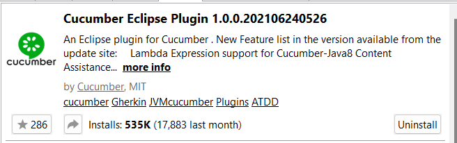
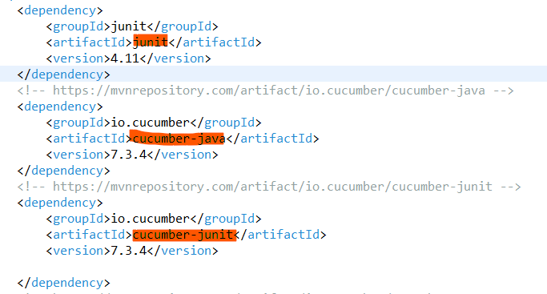
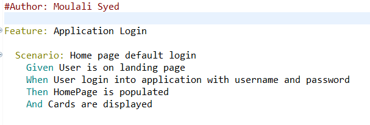
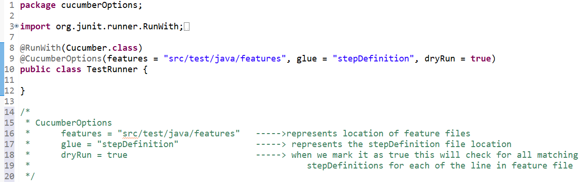
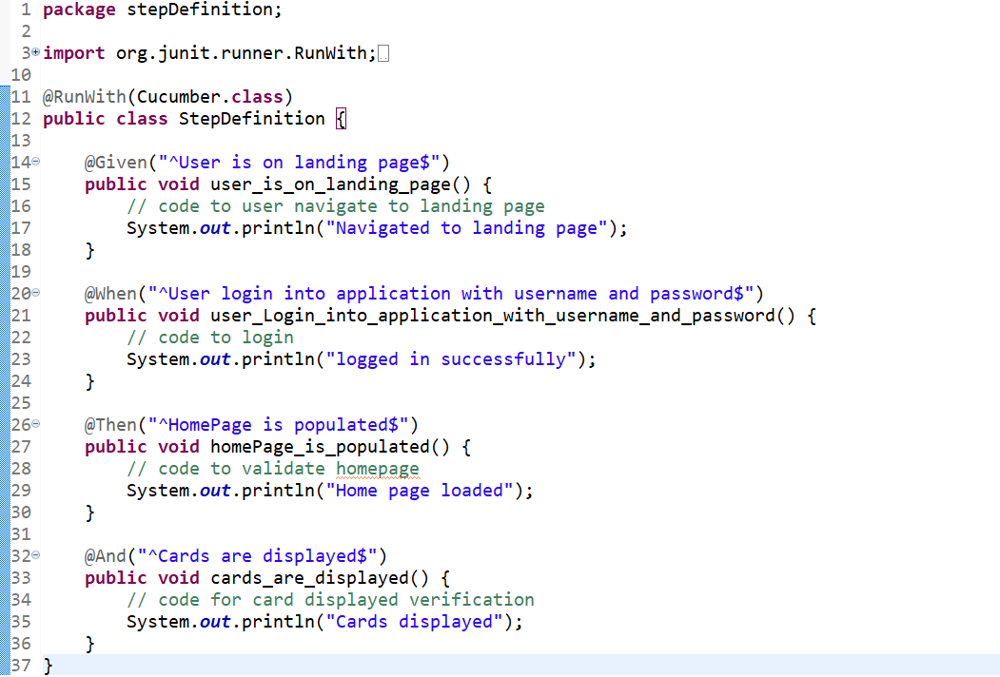

We must have java and eclipse installed and configured on our machine
Install cucumber plugin
Go to Eclipse market place ,search for cucumber eclipse plugin and install it
Create a Maven Project
Right click on project - select Configure - select Convert To cucumber project
Add Cucumber dependencies
The 3 main things we have in a cucumber project
Feature is where we define what to be automated using gherkin language
StepDefinition is where we implement the testcase , code the teststeps
TestRunner which has knowledge of feature file , StepDefinition file to connect above two and execute we use either junit or testng runner class
Lets create Feature file
inside src/test/java folder create a package , name it features
create a file login.feature
Lets create TestRunner class
inside src/test/java folder create a package , name it cucumberOptions
create a class TestRunner.java
Now run the TestRunner class this will give a template for all the steps in feature file and then write respective code for each method in StepDefinition file
Lets create StepDefinition class
inside src/test/java folder create a package , name it stepDefinitions
create a class StepDefinition.java
Write the code for each test step from the .feature file
